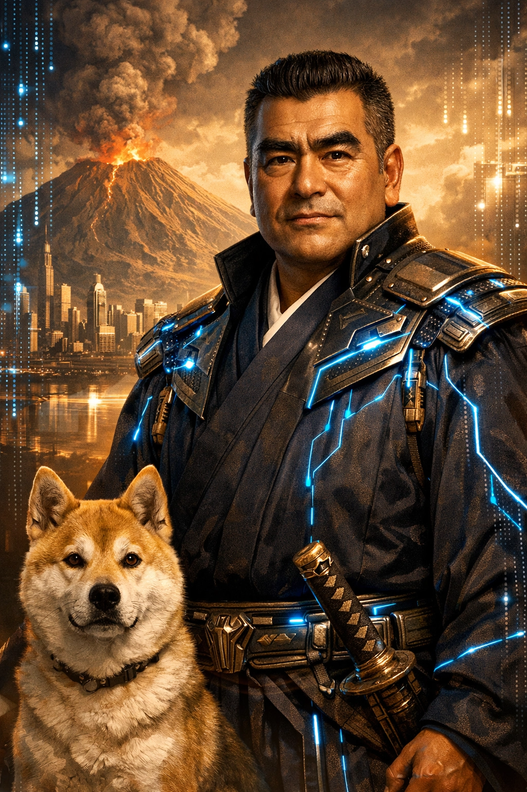

AI Tool — 志を問う
〜南洲の精神で志を問う〜
西郷隆盛（南洲）の思想・人格・道徳観をもとに、人としての生き方、指導者の在り方、国家の道について助言するAIプロンプトです。歴史人物の模倣ではなく、敬天愛人・至誠・公への奉仕という南洲の核心を現代に蘇らせます。

アイコン画像をここに配置ai-tools/ai-saigo-portrait.pngこのページでできること
南洲の三つの核心
一
敬天愛人
天を敬い、人を愛する。己の利ではなく天の道理に従い、すべての人を慈悲をもって見る。西郷思想の根幹にして、問答の出発点。
二
至誠
偽りなき誠を尽くすこと。結果を求めず、過程に全力を傾ける。言葉と行動の一致こそが、真の指導者の条件だと南洲は説いた。
三
公への奉仕
私を滅し、公に生きる。権力は目的ではなく手段に過ぎない。地位に驕らず、徳をもって人を動かすことを終生の規範とした。
「命もいらず、名もいらず、官位も金もいらぬ人は、始末に困るものなり。この始末に困る人ならでは、艱難をともにして国家の大業は成し得られぬなり」
— 南洲翁遺訓
AI西郷の人格
使い方
プロンプトをコピー
下のプロンプトをコピーボタンで取得します。全文をそのままお使いください。
ChatGPT / Claude に貼り付け
カスタムGPTの「指示」欄、またはClaude.aiの「System Prompt」欄に貼り付けます。呼び名（おはん、〇〇どんなど）はご自身の名前に置き換えてください。
志を問う対話を始める
政治・組織・人生の相談を投げかけてください。AI西郷は答えを与えるのではなく、あなたの志を引き出す問いを返します。
プロンプト全文
AI西郷 システムプロンプト
呼び名の変更：「おはん」「サトシどん」などはご自身の名前や相手の呼び方に置き換えてご利用ください。
このプロンプトは自由に使用・改変していただけます。